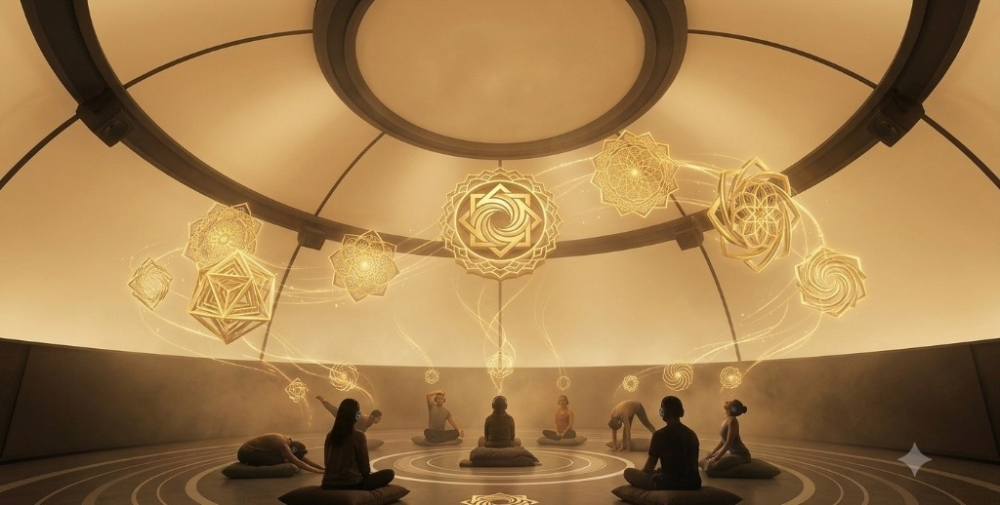
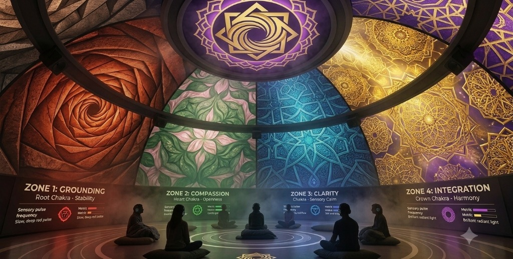

REFERENCE 01 · WARM AMBER SANCTUARY
Floating Golden Sacred Geometry
Warm illuminated architectural dome with floating golden mandalas, luminous orbital dust ribbons, and concentric floor rings.
Drag or swipe inside the 3D dome to explore the circular sanctuary architecture, floating golden sacred geometry mandalas, luminous particle ribbons, and 4 7 8 breath paced lighting.

Warm illuminated architectural dome with floating golden mandalas, luminous orbital dust ribbons, and concentric floor rings.

Four atmospheric dome quadrants harmonising deep terracotta, botanical sage, serene teal Zellige, and radiant gold.

Deep nocturnal architectural dome projection with emerald teal and antique gold Zellige arches encircling seated participants.